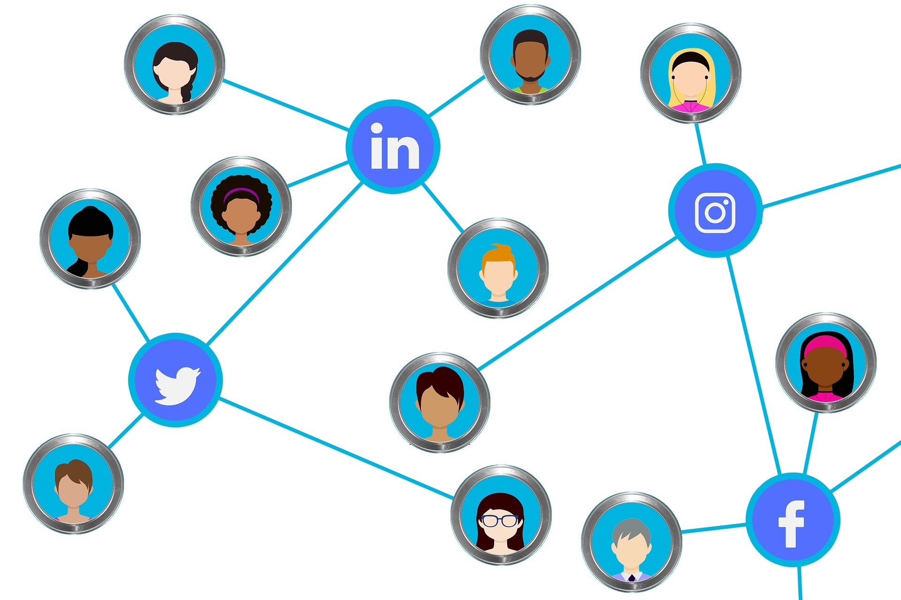

Drag and Drop Website BuilderThe world has undergone a profound digital transformation in recent years. Digital literacy has emerged as a critical skill for individuals and communities to navigate the ever-evolving digital landscape. In layman’s terms, Digital Literacy is the ability of individuals to navigate digital information and communicate effectively through digital technology for meaningful actions. The importance of digital literacy becomes more significant considering the rapid technological advances.
With the shift from cubicles to work-from-home and now a hybrid working style, it has become imperative for everyone to be able to perform and manage their job digitally. Individuals must equip themselves with skills that make their work smarter through artificial intelligence and automation. The focus should be on acquiring technical skills and delving deep into understanding the usage of digital tools to impact society. We can foresee greater emphasis on digital citizenship and critical thinking. The rise of misinformation, fake news, identity theft, and cyberbullying will push organizations and individuals to focus more on evaluating and refining their activity on the internet.
This blog describes the future of digital literacy and discover how it will change our interactions with technology.
The mundane administration tasks in schools and universities are now effectively streamlined and time is saved, thanks to automation. Educators can focus on the more important aspect of fostering critical thinking skills and personalized learning with adaptive learning systems.
AI has been pivotal in developing a new form of education with personalized feedback and support like never before. It has employed a virtual tutor who understands your learning style and encourages learners to think critically. Critical thinking enables us to solve and navigate complex problems in our world. Teaching strategies are fine-tuned to learner’s needs by analyzing data and progress.
Picture this: You are on your field trip while sitting in the classroom and it feels as immersive as reality. AR and VR are enhancing school experiences and building students’ critical thinking to apply theoretical knowledge to real-world scenarios. Students can hone their problem-solving skills through simulations and interactive experiences. Practicing anatomy in AR is increasingly becoming a norm in medical colleges because students can experience and apply their learning in the human body present in augmented reality.

A society empowered by technology needs people who can traverse the complicated digital terrain with confidence, integrity, and accountability. This is where digital literacy comes in. Societies may use technology’s revolutionary power to promote inclusive, egalitarian communities in the digital age and bring about positive social change by adopting digital ethics, digital citizenship, and digital rights.
To create a future in which technology is used for good, we must invest in training in digital literacy and cultivate a culture of digital empowerment as we continue to navigate the always-changing digital terrain.
Drag and Drop Website Builder